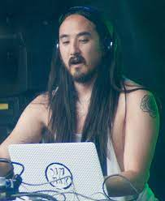
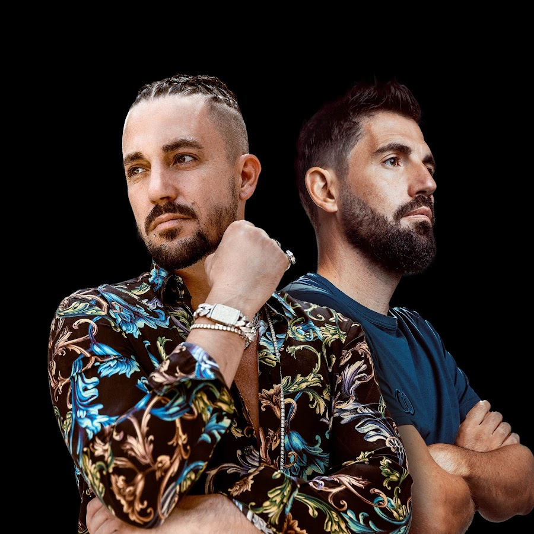
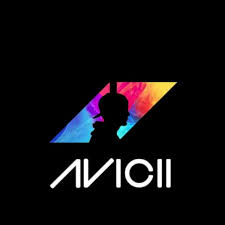
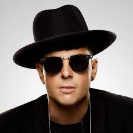

Principales Djs:
Steve Aoki
Steve Aoki, es un DJ y productor de EDM estadounidense de origen japonés, fundador del sello discográfico Dim Mak Records. Actualmente, ocupa el puesto #10, según el ranking de la revista DJ Mag.



Dimitri Vegas & Like Mike
Dimitri Vegas & Like Mike son un dúo belga de DJs de EDM compuesto por los hermanos Dimitri Thivaios y Michael Thivaios que se encuentra activo desde 2007. También son fundadores y dueños del sello discográfico Smash the House desde 2010.

Avicii
Tim Bergling, conocido como Avicii, fue un DJ, remezclador y productor musical sueco. A los 16 años, comenzó a publicar sus remixes en foros de música electrónica, lo que lo llevó a su primer contrato discográfico. Alcanzó la fama en 2011 con su sencillo «Levels».

Timmy Trumpet
Timothy Jude Smith, conocido artísticamente como Timmy Trumpet, es un DJ australiano de los géneros house, bounce, Hardstyle y psytrance. Es conocido en los grandes festivales de música electrónica por utilizar en sus sets una trompeta para hacer sus canciones.